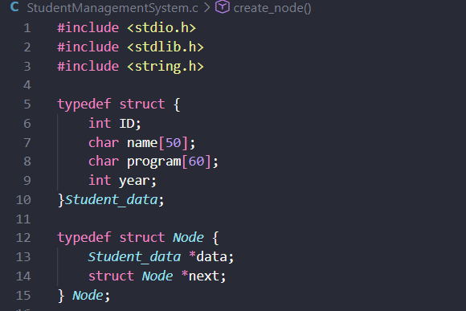
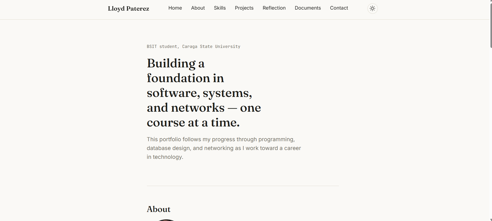
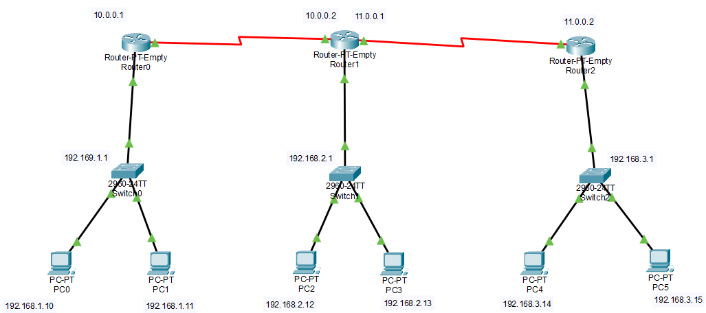

Student Management System
A C programming project demonstrating structures, dynamic memory allocation, and data management.
C
BSIT student, Caraga State University
This portfolio follows my progress through programming, database design, and networking as I work toward a career in technology.
Hello, I'm Lloyd, a Bachelor of Science in Information Technology student at Caraga State University Main Campus, passionate about learning software development, programming, and computer networking. This portfolio documents my academic journey, projects, and the skills I develop as I work toward becoming a technology professional.

A C programming project demonstrating structures, dynamic memory allocation, and data management.
C

A responsive website created with HTML and CSS to present my background and learning journey.
HTML, CSS

A documented networking exercise covering subnetting, routing tables, and a small network topology.
Cisco Packet Tracer
While learning C programming, I discovered that dynamic memory allocation requires careful management of ownership and deallocation. I am working on understanding how pointers and structures interact so I can write safer programs and avoid memory leaks.
Resume and other files I've prepared, kept here so they're easy to find.
Resume
The best way to reach me is by email.
paterezmatty@gmail.com